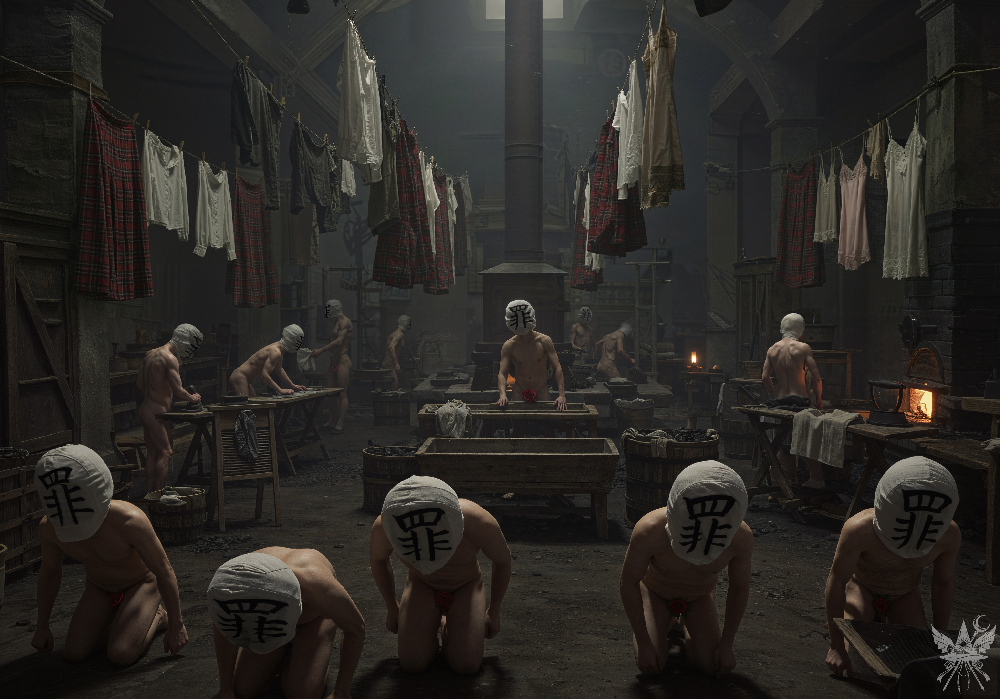
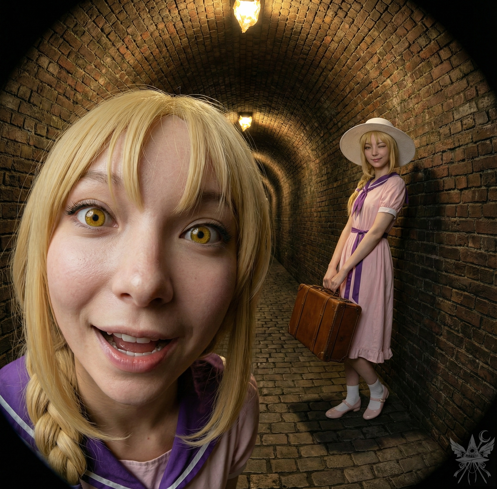
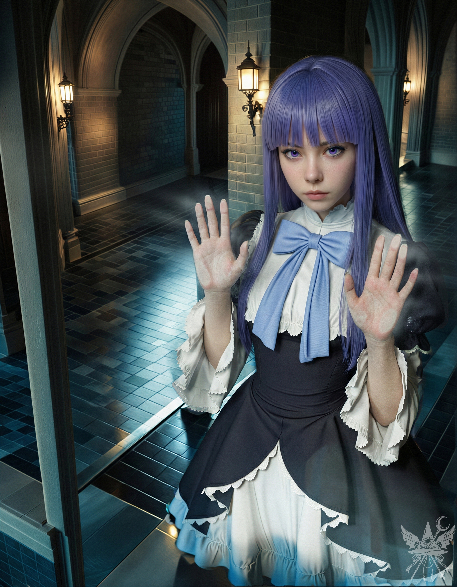
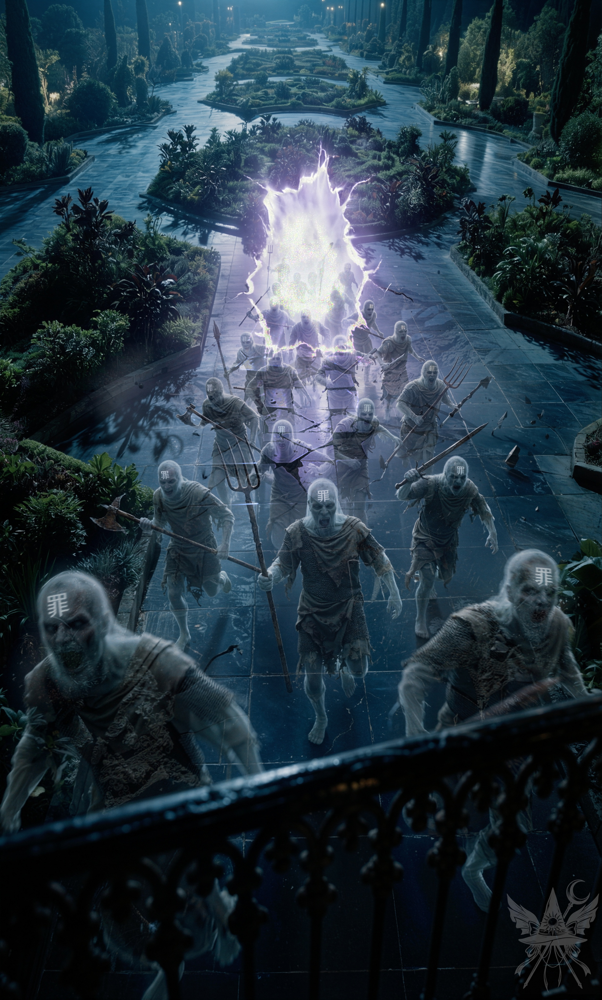
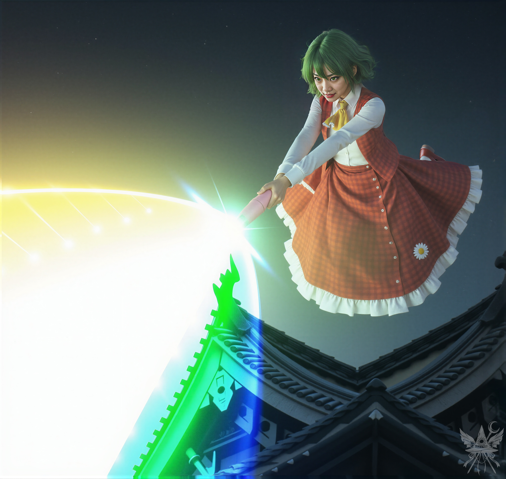

幽香の寝室は、重厚なワインと甘いアロマの香りに満ちていた。目の前でくつろぐ絶対的な支配者は、これまで遭遇してきたどの悪魔とも異なる次元の傲慢さを放っている。彼女の機嫌を損ねず、かつ自身の目的を果たすための綱渡り。ルイズの「贈り物」を試すという選択も、半ばその延長線上にあった。
（まだ『眼球』の方がマシね。オレンジの様子を見る限り、致命的な崩壊は免れそうだし）
「ありがとう。それじゃあ、これを」
油紙に包まれた小さな球体を手に取ると、隣で弾んだ声が上がった。
「おおー！ メデたん、それにするの！？ わたしと一緒で嬉しい！ これで二人で山をもドッカァァンだね！」
差し出された手のひらには、いくつかの眼球が転がっている。根元に付着した茶色い葉の感触に、わずかに安堵した。
（少なくとも、本物の臓器ではないようね）
「あんなの食べさせるなんて、あんたたちマジでサイテーっしょ」
部屋の隅から、くるみが露骨に顔をしかめる。
「あら、くるみちゃんは何も試さないの？」
ルイズが涼しい顔で微笑みかけると、吸血鬼の少女は誇らしげに小さな翼を広げた。
「だって、あの子は血しか飲まないんだから」
幽香が喉の奥でくつくつと笑う。
「それに今は、すーんごく飢えてるのよねぇ」
くるみは何かを言い返そうと歯を食いしばったが、結局は気まずそうに視線を逸らした。
「心配しなくていいわ、くるみちゃん。オレンジみたいにバカ食いさえしなければ、ただの無害な刺激物よ」
ルイズの落ち着いた声を背に受けながら、油っぽいゼリー状の球体を噛み砕く。味はほとんどない。
数分の沈黙。巨大なベッドの縁に寄りかかりながら、ふと、意識の底から奇妙な衝動がせり上がってくるのを感じた。
「幽香様。やはりこの日記は、直接返したいのです」
口から出た言葉に、自分でも驚いた。
「直接？」
「ええ。私が……彼に、直接渡すことに決めました」
（私、何を言っているの？ 彼を助けたいわけじゃない。ただ、一度決めた手順を曲げられたくないだけ……）
「決めた、と？ 私の領域で、勝手に物事を決めるなんて……いい度胸ね」
空気が凍りついた。
（しまった。あの袋を被せられるか、それ以上の罰が降る）
全身の筋肉が強張る。だが、それは恐怖による硬直ではなく、むしろ眼前の絶対者に対する抗戦の意志だった。坂道を転がり落ちるように、沸き上がる熱を解放したい。結果がどうなろうと。
硬質な破壊音が響いた。黄金の鎖が砕け散るのと同時に、視界が緑に覆われる。幽香が、鼻先が触れ合うほどの至近距離に立っていた。
「生意気な口は、もう二度と利かないことね、お嬢さん」
瞳孔の奥で赤蓮の炎が渦巻いている。だが、不思議と恐怖は感じなかった。
「……ええ。わかっています」
かろうじて理性を総動員し、礼儀正しい言葉を絞り出す。
「ですが、遊んでいる暇はありません。やるべきことを進めましょう」
（これで終わりかしら）
肩に重い手が置かれた。次の瞬間、幽香は腹を抱えて甲高い笑い声を上げた。
「ねえ、魔女ちゃん？ あなたを見て、私が誰を思い出したと思う？」
「過去に拷問した、哀れな犠牲者の一人ですか？」
その返答がさらにツボに入ったのか、幽香の笑いは止まらない。周囲の者たちも、つられて笑いを漏らし始める。
「若い頃の私にそっくり。生意気だけど、きっと大物になるわ」
幽香は満足げに宙へ舞い上がり、優雅にベッドへ腰を下ろした。
「いいわ。地下室へ案内してあげる。少し着替えてくるから、そこで待っていなさい」
そう言い残し、彼女は奥の扉へと消えていった。
激しい動悸と、頭蓋骨を内側から締め付けられるような圧迫感。思考が熱病に浮かされたようにまとまらない。
（不快極まりないわ。あの刺激物、完全に毒じゃないの）
ベッドで跳ね回るオレンジ。苛立ち紛れに爪を噛むくるみ。相変わらずリンゴをかじるエリーと、死んだように目を閉じるルイズ。この狂気じみた空間から逃げ出したい衝動を必死に押さえ込み、椅子に深く腰掛けて、ただやり過ごす道を選んだ。
意識が浮上すると、格子柄のドレスに着替えた幽香が立っていた。視界の歪みは抜けきっていない。
「それじゃあ、お友達に会いに行きましょうか」
余計な口を叩かないよう、黙って彼女の背中を追う。並んで歩くルイズは、壁の装飾を眺めながらこの異常な遠足を心底楽しんでいるようだった。
「やはり、素晴らしいお屋敷ですね」
「これはまだ序の口よ。自慢の庭はまだ見ていないでしょう？」
「ええ。全てが終わったら、是非拝見したいものですわ」
地下へ降りるにつれ、肌にまとわりつく空気がひやりと冷たくなる。光源は蛍光塗料のように不気味に発光する壁の紋様のみ。行き交うコウモリ羽のメイドたちは、主の姿を認めるや否や、機械のように深く頭を垂れた。湿気とカビの匂いに、規則的な水滴の音が混じる。
重厚な金属扉の前。幽香が傘の先を鍵穴に差し込み回すと、鈍い摩擦音と共に扉が開いた。
鼻を突くのは、むせ返るような洗剤の匂いと、ボイラーの熱気。

そこは、個人の尊厳を完全に剥奪された異形の労働区画だった。規則的な衣擦れの音と水音だけが響く中、没個性的な肉塊たちが黙々とフリルやレースを洗い上げている。言葉を持たない彼らの群れの中に、かつて言葉を交わした青年の面影を探すのは不可能だった。滑稽さと不気味さが同居する、規律正しく管理された地獄。
歩みを進める主の前に、肉塊たちが次々とひれ伏す。少し離れた場所で、一心不乱にアイロンを動かす一体の前に幽香が立ち止まった。
「タ・ロウ・くん？ 何を隠しているのかしらぁ？」
傘の先端が、股間を覆う装飾を無慈悲に小突く。
「な、何も隠しておりませんっす、お嬢様！」
声の主は、間違いなくあの青年だった。
「本当かしら〜？」
探るように動いた傘が、赤いレースの下着を引きずり出す。
「正直に言えば許してあげようと思ったのに。残念ね」
「お許しください、お嬢様！」
太郎は床に這いつくばった。
「これは、幽香様への純粋な愛ゆえの行動っす！」
「奴隷の愛なんていらないわ。あんたはただのゴミ。そんなクズが生きていられるのは、私の無限の慈悲のおかげなのよ。……まだ分からないのかしら？ なら、もっと丁寧に教えてあげましょうか」
言葉の区切りごとに、傘の石突きが鈍い音を立てて頭部を打ち据える。
「ひぃっ……！ か、かしこまりましたっす……！ お嬢様の、おっしゃる通りで……！」
「……咳払い一つ、失礼します」
これ以上の茶番に付き合う気になれず、口を挟んだ。
「幽香様。彼に用があるのですが、少しだけ時間をいただけませんか？ 罰なら、私が去った後でも存分に与えられるでしょう」
「あら。まだそんな口が利けるの？ まあ、その方が面白いかもしれないわね」
幽香は冷酷に口角を上げた。
「どうぞ、ご歓談なさい。邪魔はしないわ」
そう言うと、彼女は優雅な足取りで洗濯物の山へと向かっていった。
汗と汚水にまみれた青年の姿は、湖畔で出会った時よりもさらに惨憺たるものだった。
「太郎。あなた、本当にこれでいいの？」
「お前、ギャルゲーの本質ってやつを全然分かってねーな！ 俺は今、幽香ルートのトゥルーエンドを目指してるとこなんだよ！」
「トゥルーエンド？」
袋の下から、軽蔑するような視線を感じる。
「全部、幽香への愛を試すフラグなんだよ！ この試練を乗り越えれば、すぐに俺の献身にデレて、俺を王として迎えてくれる。二人で夢幻館を支配して、ハッピーエンドってわけだ！ ……お前を選ばなかったこと、後悔してもしらねーぞ！」
「……私が？ なぜ？」
「だから！ もしあの時お前を選んでたら、『別のルート』に入ってたんだって！」
完全に狂っている。これ以上、彼の妄想に付き合うのは時間の無駄だ。
「そう。とにかく、これを返しに来ただけよ」
懐から抜き出したノートを差し出す。
「おおっ！ キター！ これでセーブデータ確保だぜ！ 幽香、覚悟しろよ！」
興奮した声が地下室に反響する。
「何ですって？ もう一度言ってみなさい」
背後から伸びた傘が、太郎の顎を強引に跳ね上げた。
「な、なんでもないっす！ 何も言ってないっすよ、お嬢様！」
＊＊＊
地下室を出た廊下で、奇妙な光景に出くわした。
瓜二つのルイズが二人、並んで立っている。

片方はトランクを提げ、涼しげな大人の余裕を漂わせている。もう片方は傘を抱え、隠しきれない野生動物のようなエネルギーを全身から発散させていた。視覚的な模倣は完璧でも、中身の違いは火を見るよりも明らかだ。
「ルイちゃん、準備はいいかしら？」
背後から現れた幽香が声をかける。
「はいっ！ すんごーく嬉しい！ わたし、大人っぽく見えるでしょ！ ねっ？」
偽物の方──オレンジが、弾けるような声で応えた。
「ええ。その傘がなければ、どちらが本物か見分けがつかないくらいよ」
幽香は皮肉げに笑う。
「さて。それじゃあ夢幻館の中心部へ向かいましょうか。そこなら、魔女ちゃんの力も存分に発揮できるはずよ」
＊＊＊
冷ややかな空気が満ちる、黒曜石のように滑らかな床の広間。
「人を召喚するのね。退屈な魔法実験でなくて安心したわ。必要なものはある？」
「いえ。ただ……その人が幽香様をどう評価するか、少し懸念が」
「私がどう評価するかの方が重要でしょう？ さあ、始めなさい」
魔法陣を描き終え、意識を魔力の奔流へと同調させる。仰々しい詠唱を嫌う彼女の性質に合わせ、短い名のみを紡ぎ、エネルギーの渦を時計回りへと指向した。
青白い霧が収束し、奇跡の魔女が顕現する。手には、いつものようにティーカップが握られていた。
絶対的な境界線。見えないガラスに阻まれたかのように、彼女の声だけがこちら側に届く。空間ごと切り取られたような、特異な隔絶感。
「驚いたわ。メデアの口寄せに強いられて、あんなに快適なソファから起こされたものを……」
「紅茶、こぼしていませんよね？」
「あら、こぼしてしまったかしら……？ まあ、大丈夫でしょう」
フレデリカは涼しい顔でカップを傾けた。
「それより、私の召喚に協力してくれたお嬢様を紹介してくれるかしら？」
「四季のフラワーマスター、風見(かざみ)幽香(ゆうか)よ」幽香が歩み出る。「古手……梨花ちゃん？ 随分と久しぶりね」
「ええ、お久しぶり。でも、今は『奇跡の魔女フレデリカ』と呼ばれる方が好きなの。構わないわよね？」
「いいわよ。それなら、メデアちゃんにも何か面白い二つ名をつけてあげようかしら」
「でも、この子の特技はこれから見えてくるし、二つ名なんてまだ早いわね」
「ふふっ。メデアちゃんにとって、この召喚はただでは済まないでしょうね〜♪」
フレデリカの冷徹な眼差しがこちらを向く。
「やれやれ、メデア。もう悪魔に魂を売ってしまったの？」
「どちらかといえば、取引をしただけです」
「それは同じことよ」
「それに、本物の悪魔に遭うのはこれからですし。今のところ、次の行き先は地獄になりそうなので」
「あら、地獄に行くの？ メデアにしては大胆な選択ね。……一つ忠告しておこうかしら。そこで死なないようにね。メデアの最近の仕事ぶりじゃ、そこで死なれたら困るから」
不意に、幽香が両手で傘を握り直した。
「おしゃべりはここまでよ。懲りずに、また死にに来ている羽虫どもがいるみたいね。そんなショーを見逃すわけにはいかないわ。バルコニーへ行きましょう！」

バルコニーへと続く扉が開かれる。フレデリカはその手前で立ち止まり、見えない壁に触れてかすかに微笑んだ。
「やれやれ、メデアの仕事はまだ終わってないみたいね。まずはこの屋敷で任された任務を果たしなさい。その間に、私はこの状況をどう解決するか考えるわ」
バルコニーから眼下を見下ろすと、夜の庭園を青白い光が侵食していた。

紫電を放つ空間の裂け目から、際限なく湧き出す暴力の奔流。額に直接焼き付けられた「罪」の文字。地下の労働者たちとは対極に位置する、暴走する殺意そのもの。彼らは一切の雄叫びを上げず、ただ不気味なほどの無音の中で、波のように館へと押し寄せていた。
その先陣を切るように、鎌と爪が群れをなぎ払う。
エリーの巨大な刃が空を裂き、くるみの不可視の腕が敵を粉砕する。塵となって消える端から、新たな個体が補充されていく絶望的な消耗戦。
「幽香様！ ご心配なく、ここは我々が！」
エリーの声が夜気を震わせる。
「いいえ。今度こそ、絶対楽しませてもらうわ」
幽香は手すりに足をかけ、振り返った。
「ルイズとオレンジは予定通りに。メデア、あのポータルへ飛び込みなさい。地獄への最短ルートよ。死ぬより早いわ。……それと、絶対に死んじゃダメよ。死んでも私からは逃げられないんだから」
言うが早いか、彼女は虚空へと身を躍らせた。

夜空を緑の閃光が焼き尽くした。
圧倒的な個の暴力。傘の先端から放たれた極太の熱線が、眼下の群れを文字通り蒸発させていく。大気を切り裂く轟音と、空気が焦げる匂い。美しくも致死的な七色の輝きが、夜を強引に真昼へと反転させた。
光の暴風が去った後、ポータルから新たな人影が現れる。
東洋の武家装束を纏った少女が、日本刀でエリーの鎌の柄を受け止めていた。文化の異なる刃が交錯し、激しい金属音と火花が散る。拮抗する力の均衡。
「またお前か。しつこい女だね」
エリーが鎌を押し込む。
「己の姿を見よ、門番！ 堕落の巣窟を守るとは、どれほど落ちぶれたか！ エリー殿、己の誇りを思い出せ！」
「明羅(めいら)、とっとと地獄へ帰りな」
前衛の激突を横目に、ポータルへ向かって駆け出す。
視界の端で、オレンジが傘から炎を吹き出しながら敵陣を蹂躙している。くるみも瞬間移動を駆使して奮闘していた。
眼前に、青白い顔が迫る。
思考より先に体が動いた。鎖に繋がれた魔導書を、メイスのように振り抜く。鈍い感触と共に、頭蓋骨が砕け散る音が響いた。
（……私が、やったの？）
血液が沸騰するような高揚感。眼球の副作用が、殺意のストッパーを完全に焼き切っていた。
邪魔な障害物を次々と物理的に粉砕しながら、ポータルへの道を切り開く。周囲の惨状などどうでもいい。ただ、あの紫の裂け目だけが目標だった。
最後の一人を魔導書で弾き飛ばし、鎖に引かれる反動を利用して空間の裂け目へと身を投じる。
（私のよく知る宇宙……ここでは『幻夢界』と呼ばれているのね）
果てしなく続く暗闇の中を、彼女は真っ逆さまに飛んでいく。熱病のように跳ねていたこめかみの鼓動も、徐々に静まりつつあった。
（これは待ちに待った安らぎ？ それとも、嵐の前の静けさかしら）
まったく、誰が幻夢界でこんな無茶な飛び方をするのかしらね。でも幸い、今回は小惑星は遠くにあるから、メデアを守る光の輪がないことを心配する必要はなさそうだわ。今、自由に飛んでいるメデアは、私には驚くほど勇敢に見える。まさに期待に満ちた若き魔女ね。……ふふっ。彼女はこれから自分の身に何が待ち受けているのか、ちゃんと分かっているのかしら？
＊＊＊
「あらあら。坊やたち、飽きちゃったわ」
幽香は優雅に着地すると、明羅を見下ろした。
「小娘もね。今日のショーは、これでおしまいよ」
地面が波打ち、巨大なヒマワリの蔦が中庭の石畳を突き破って出現した。逃げ遅れた罪人たちを次々と絡め取り、絞め殺していく。間一髪で後退した明羅は、悔しげに幽香を睨みつけながらポータルへと撤退した。
蔦はそのままポータルを覆い尽くし、完全に封鎖してしまう。
「リーダーに伝えてちょうだい。『大人しく待っていなさい』とね」
＊＊＊
息を呑むような静寂。
そして、圧倒的な虚無。
視界を埋め尽くすのは、生命の気配を一切感じさせない荒野。果てしなく続く絶壁の道は、ここがさらなる苦難の始まりに過ぎないことを冷酷に示していた。
（ああ……そうだった。ここは地獄だったわ）
長年研究対象としてきた存在の故郷。
乾いた灰色の風が吹き荒れ、肌を刺す。体を起こし、細く曲がりくねった道を見据えた時、背後から震える声が響いた。
「あら……また一人、呪われた魂が迷い込んできたのね。もう涙を流しても無駄よ。何もかも失ったことを悟りなさい……」
振り返ると、半透明の女性の姿が宙に浮いていた。
「泣くつもりも、絶望するつもりもありませんが。あなたは？」
「私は……かつて人間だったの。でも今は、誰にも必要とされない哀れな幽霊……」
「そうですか。実のところ、私は地獄のどこかにある『静かなる軍』の拠点を探しているのですが、何かご存知ありませんか？」
「私が、必要なの！？ こんな私なんかに希望を与えてくれて、ありがとう！ あなたは優しい子ね。じゃあ……私の人生についてお話しましょうか……」
「ええと……軍について聞きたいんですけど」
「地獄？ 地獄の事なんて、誰にも分からないわ。でも、昔のことは覚えているの。昭和何年だったかしら……あの頃、私は……」
延々と続く、酒と男と団地生活の愚痴。
眼球の副作用か、この環境のせいか、それともこの幽霊のせいか。ひどい吐き気が込み上げてくる。
（……一体、どうすればいいの？）
果てしない荒野の真ん中で、メデアは完全に途方に暮れていた。
[SYSTEM ALERT: 音響兵器デプロイ完了]
▼ 本章の絶望を1000%味わうための専用聴覚データ ▼
■ YouTube：『Route : ETERNAL SLAVE（ルート：エターナル・スレイブ）』